fieldClim: Workflow-Schritte für Energiebilanz und Wärmeflussmethoden
Jörg Bendix, Chris Reudenbach
2026-05-28
Source:vignettes/fieldclim_workflow_steps.Rmd
fieldclim_workflow_steps.RmdZiel dieser Vignette
Diese Vignette zeigt auf der Grundlage der
fieldClim-Beispiele einen zusammenhängenden Workflow für
die Kern-Funktionalität des Pakets. Sie zeigt eine vollständige Abfolge
von Arbeitsschritten: Messdaten einer Mikroklima-Station werden als
weather_station-Objekt organisiert, Strahlungs- und
Bodenwärmegrößen werden geprüft, und Wärmeflussmethoden werden auf
derselben Datenbasis nebeneinander berechnet.
Die vorhandene Paketdokumentation deckt im Kern folgende Arbeitsbereiche ab: Wetterstationsobjekte, kurz- und langwellige Strahlung, Solar- und Geländegeometrie, atmosphärische Transmission, Bodenwärme, Feuchte-, Druck- und Temperaturhilfsfunktionen sowie latente und sensible Wärmeflussmethoden.
Diese Vignette macht daraus acht Workflow-Schritte:
| Schritt | Leitfrage | Paketbereich |
|---|---|---|
| 0 | Was ist das Arbeitsmodell von fieldClim? |
weather_station, Vignetten, Hilfeseiten |
| 1 | Wie wird ein Stationsdatensatz geladen und geprüft? | Beispieldaten in inst/extdata/
|
| 2 | Wie werden kurzwellige Strahlung und Albedo gelesen und kontrolliert? |
rad_sw_*, Messkomponenten |
| 3 | Wie werden langwellige Bilanz und Netto-Strahlung geprüft? |
rad_lw_*, rad_bal, Messkomponenten |
| 4 | Wie entsteht aus Strahlung und Bodenwärmestrom verfügbare Energie? | Energie- und Bodenwärmefluss |
| 5 | Welche Wärmeflussmethoden werden unterschieden? | Methodenkonzept, Bilanzbindung, Diagnostik |
| 6 | Wie wird derselbe Datensatz an fieldClim
übergeben? |
build_weather_station() |
| 7 | Wie werden PT, Bulk-Residual, Bowen, Monin-Obukhov/Profile und Penman verglichen? |
turb_flux_calc(),
turb_flux_bulk_residual() und Einzelmethoden |
Notation
Die Vorlesungsfolien verwenden für die bodennahe Energiebilanz die
Größen Q*, B, L und
V. Diese Vignette behält diese Notation im Erklärungsteil
bei. Erst an der Schnittstelle zum Datensatz und zu
fieldClim wird auf die spezifischen Paket- und Spaltennamen
des fieldClim Pakets gemappt.
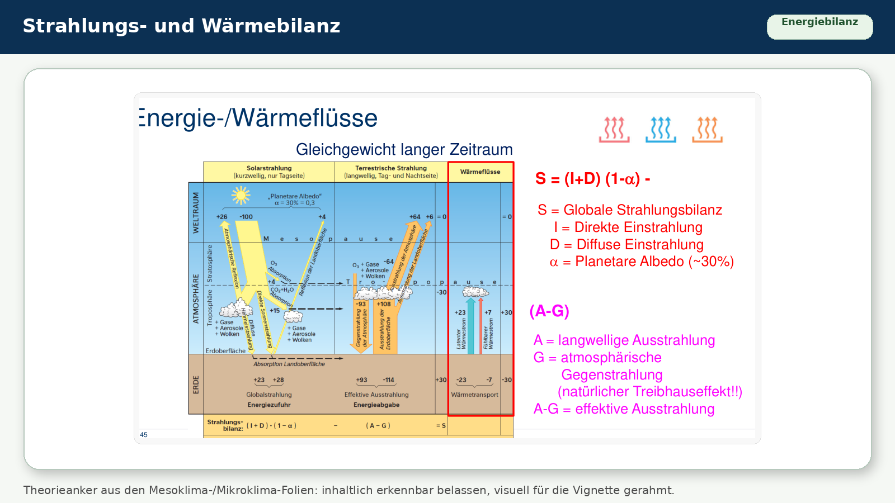
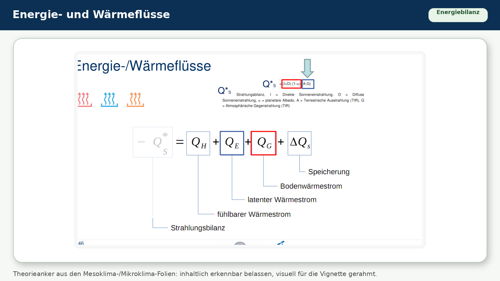
| Theoriegröße | Bedeutung | Code-Variable in dieser Vignette | Feld im Datensatz oder Paket |
|---|---|---|---|
Q* |
Strahlungsbilanz / Netto-Strahlung | Q_star |
rad_net, rad_bal
|
B |
Bodenwärmestrom | B |
heatflux_soil, soil_flux
|
L |
fühlbarer Wärmestrom | L |
sensible_* |
V |
latenter Wärmestrom | V |
latent_* |
S |
Speicherterm | S |
hier nicht separat gemessen |
Die Arbeitsbilanz lautet in der Theorie-Notation:
\[ Q^{*} = B + L + V + S \]
Der Speicherterm S wird in diesem Beispieldatensatz
nicht separat berechnet. Das bedeutet nicht, dass Speicherung nicht
existiert. Es bedeutet nur, dass die Datengrundlage keine vollständige
Auflösung von Wärmespeicherung in Luftvolumen, Vegetation, Wasserfilmen,
oberflächennahem Boden und Messumgebung erlaubt. Für die transparente
Referenzrechnung wird deshalb gesetzt:
\[ S \approx 0 \]
Damit wird:
\[ Q^{*} - B = L + V \]
und für die Residualrechnung:
\[ V = Q^{*} - B - L \]
Mit dem Ausdruck Kontrolle aus Einzelkomponenten
wird eine arithmetische Prüfung bezeichnet: Aus kurzwelliger und
langwelliger Bilanz wird eine zweite Zeitreihe für Q*
berechnet und mit der gemessenen Spalte rad_net
verglichen.
Workflow-Schritt 0: Was soll das Paket leisten?
fieldClim ist kein einzelnes Skript, sondern ein R-Paket
mit mehreren Ebenen. Für die Arbeit mit mikroklimatischen Stationsdaten
ist die zentrale Idee das weather_station-Objekt. Dieses
Objekt bündelt Zeitachse, Standort, Messgrößen und Modellparameter.
Paketfunktionen können damit dieselbe Datenstruktur weiterreichen,
ergänzen und als Tabelle ausgeben.
| Paketebene | Zweck | Beispiele |
|---|---|---|
| Objektstruktur | Messdaten und Parameter bündeln |
build_weather_station(),
as.data.frame()
|
| Strahlung | kurzwellige, langwellige und Netto-Strahlung berechnen oder prüfen |
rad_sw_bal(), rad_lw_bal(),
rad_bal()
|
| Solar- und Geländegeometrie | Sonnenstand, Gelände- und Sichtfaktoren vorbereiten |
sol_*, terr_*
|
| Transmission | atmosphärische Dämpfung der Strahlung beschreiben | trans_* |
| Boden | Wärmeleitfähigkeit, Dämpfung und Bodenwärmestrom behandeln | soil_* |
| Feuchte, Druck, Temperatur | Hilfsgrößen für weitere Berechnungen bereitstellen |
hum_*, pres_*, temp_*
|
| Wärmeflüsse | fühlbare und latente Wärmeflüsse schätzen |
sensible_*, latent_*
|
| Sammelworkflow | mehrere Wärmeflussmethoden in einem Schritt berechnen | turb_flux_calc() |
Die Workflow-Schritte behandeln nicht jede der verfügbaren Einzelfunktion isoliert. Vielmehr soll die Abfolge die vorhandenen Funktionsgruppen in einen Arbeitsablauf gebracht werden: vom Stationsdatensatz über visuelle Plausibilitätskontrolle, Strahlung und Bodenwärmestrom bis zum Vergleich mehrerer Wärmeflussmethoden.
Workflow-Schritt 1: Stationsdaten laden und prüfen
Der Beispieldatensatz enthält einen vollständigen 5-Minuten-Tag der Caldern-Wiese. Ein vollständiger Tag mit 5-Minuten-Zeitschritten hat 288 Messzeitpunkte.
# Das Paket laden.
# Die Vignette setzt voraus, dass fieldClim installiert oder im Paketprojekt verfügbar ist.
library(fieldClim)
# Pfad zur Paket-Beispieldatei.
# Für eine Paketvignette ist system.file() der passende Weg, weil die Datei
# nach Installation unter inst/extdata/ ausgeliefert wird.
caldern_file <- system.file(
"extdata",
"caldern_wiese_2017-06-30.csv",
package = "fieldClim"
)
# CSV-Datei einlesen.
# Leere Felder, "NULL" und "NA" werden als fehlende Werte behandelt.
caldern <- read.csv(
caldern_file,
na.strings = c("NULL", "NA", "")
)
# Zeitstempel explizit als Datum-Zeit-Werte interpretieren.
# Die Zeitzone ist wichtig, weil Strahlungs- und Tagesganginterpretationen
# zeitabhängig sind.
caldern$datetime <- as.POSIXct(
caldern$datetime,
format = "%Y-%m-%d %H:%M:%S",
tz = "Europe/Berlin"
)
# Anzahl der Zeilen prüfen.
nrow(caldern)
#> [1] 288
# Zeitbereich prüfen.
range(caldern$datetime)
#> [1] "2017-06-30 00:00:00 CEST" "2017-06-30 23:55:00 CEST"
# Zeitschritt prüfen.
summary(diff(caldern$datetime))
#> Time differences in mins
#> Min. 1st Qu. Median Mean 3rd Qu. Max.
#> 5 5 5 5 5 5
# Spaltennamen anzeigen.
names(caldern)
#> [1] "record" "datetime" "Ta_2m" "Huma_2m"
#> [5] "Ta_10m" "Huma_10m" "Windspeed_2m" "Windspeed_10m"
#> [9] "rad_sw_in" "rad_sw_out" "RsNet" "RlNet"
#> [13] "rad_net" "LUpCo" "LDnCo" "water_vol_soil"
#> [17] "Ts" "heatflux_soil" "PCP"Interpretation. Der Datensatz ist für den folgenden Workflow gut geeignet: Er enthält 288 Messzeitpunkte und deckt damit genau einen vollständigen 5-Minuten-Tag ab. Das ist wichtig, weil die späteren Wärmeflüsse nicht aus Einzelwerten entstehen, sondern aus einem Tagesverlauf. Erst die gleichmäßige Zeitachse macht sichtbar, wann Strahlung, Bodenwärmestrom, Temperaturgradienten und Wind zusammenwirken. Für Nicht-Meteorolog:innen ist die wichtigste Botschaft: Wenn hier schon Zeitstempel, Zeitschritt oder fehlende Werte nicht stimmen, sieht eine spätere Flusskurve zwar rechnerisch aus, hat aber keine belastbare Bedeutung.
Workflow-Schritt 2: Kurzwellige Strahlung und Albedo
Die Folien zur Strahlung zeigen, dass einfallende kurzwellige Strahlung durch Sonnenstand, optische Weglänge und Transmission bestimmt wird. Die Albedo-Folie definiert den reflektierten Anteil als Verhältnis von ausgehender zu einfallender kurzwelliger Strahlung.
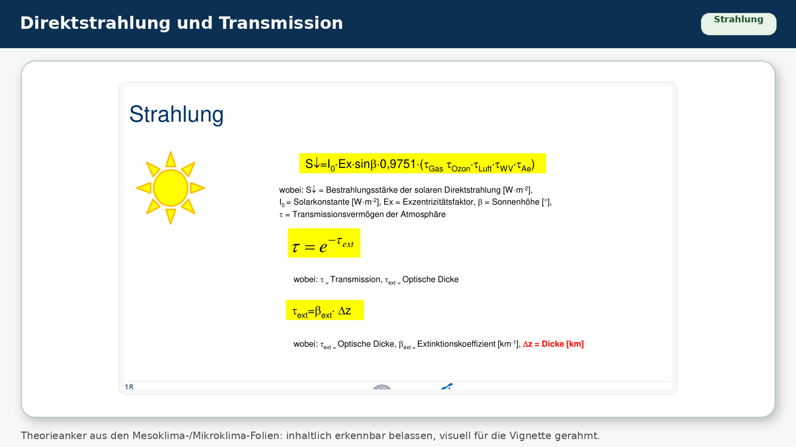
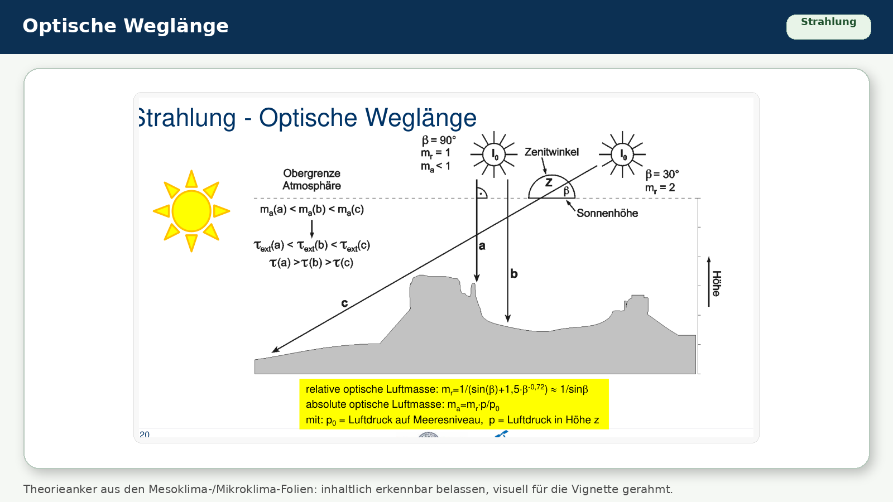
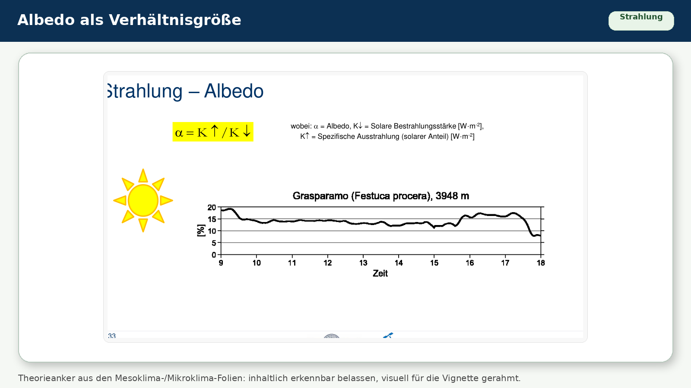
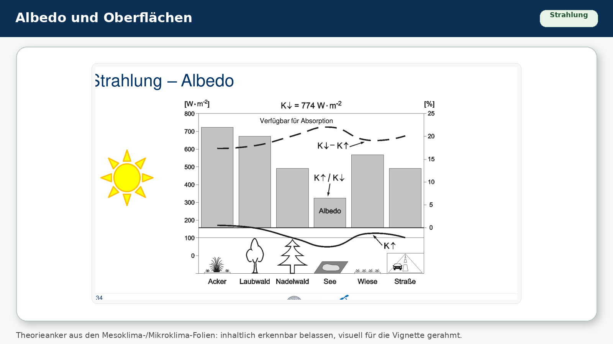
Die kurzwellige Bilanz lautet:
\[ K^{*} = K_{down} - K_{up} \]
Die Albedo lautet:
\[ \alpha = \frac{K_{up}}{K_{down}} \]
# Einfallende kurzwellige Strahlung aus der Messspalte übernehmen.
caldern$K_down <- caldern$rad_sw_in
# Reflektierte kurzwellige Strahlung aus der Messspalte übernehmen.
caldern$K_up <- caldern$rad_sw_out
# Kurzwellige Bilanz berechnen.
# Das ist der kurzwellige Anteil, der nach Reflexion an der Oberfläche bleibt.
caldern$K_star <- caldern$K_down - caldern$K_up
# Albedo berechnen.
# Bei sehr kleiner Einstrahlung ist der Quotient instabil; deshalb wird
# erst ab 50 W/m² gerechnet.
caldern$alpha <- ifelse(
caldern$K_down > 50,
caldern$K_up / caldern$K_down,
NA
)Einzelplots
# Drei Einzelplots übereinander: einfallend, reflektiert, kurzwellige Bilanz.
op <- par(mfrow = c(3, 1), mar = c(3.5, 4, 2, 1))
plot(caldern$datetime, caldern$K_down, type = "l", col = "#D55E00", lwd = 2,
xlab = "Zeit", ylab = "W/m²", main = "K_down: einfallende kurzwellige Strahlung")
plot(caldern$datetime, caldern$K_up, type = "l", col = "#7A7A7A", lwd = 2,
xlab = "Zeit", ylab = "W/m²", main = "K_up: reflektierte kurzwellige Strahlung")
plot(caldern$datetime, caldern$K_star, type = "l", col = "#000000", lwd = 2,
xlab = "Zeit", ylab = "W/m²", main = "K*: kurzwellige Bilanz")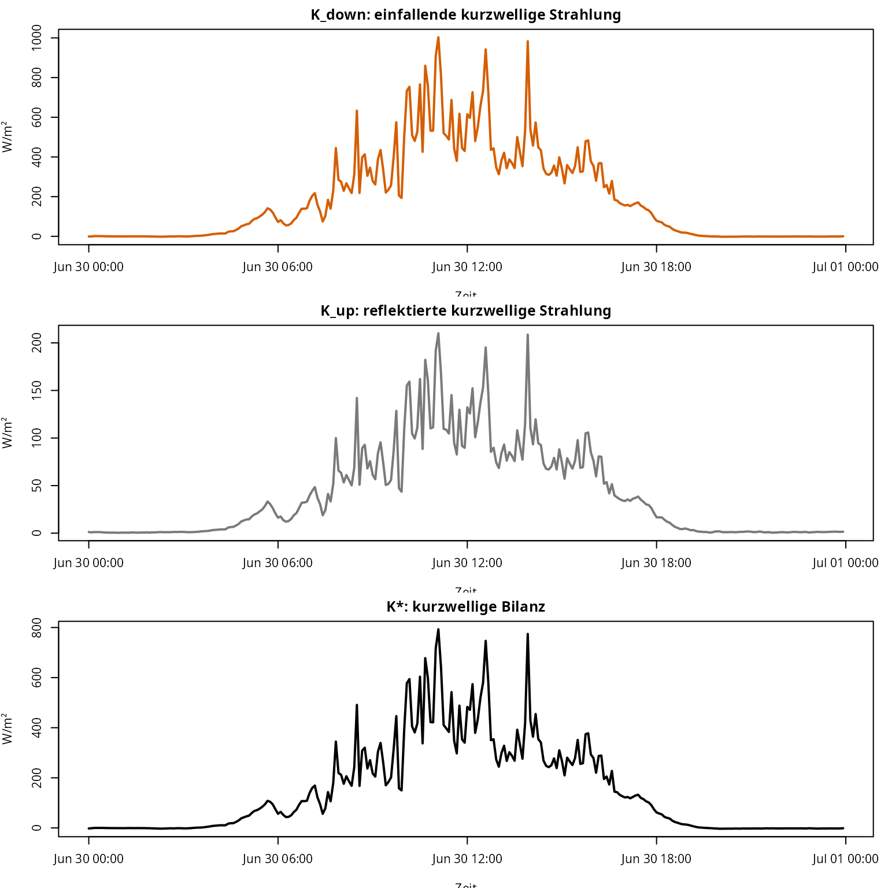
par(op)Interpretation. Die einfallende kurzwellige
Strahlung ist der sichtbare Tagesmotor der Energiebilanz: nachts nahezu
null, tagsüber stark ansteigend, bei Bewölkung oder wechselnder
Abschattung unruhiger. Die reflektierte kurzwellige Strahlung folgt
diesem Verlauf, bleibt aber deutlich kleiner, weil die Wiesenoberfläche
nur einen Teil der Sonneneinstrahlung zurückwirft. Die kurzwellige
Bilanz K_star ist deshalb der Teil der Sonnenenergie, der
nach der Reflexion tatsächlich im System Oberfläche-Atmosphäre
verbleibt. Dieser Schritt erklärt anschaulich, warum Albedo keine
Nebengröße ist: Schon kleine Änderungen der Reflexion verändern die
verfügbare Energie für Erwärmung, Bodenwärmestrom und Verdunstung.
plot(caldern$datetime, caldern$alpha, type = "l", col = "#005AB5", lwd = 2,
xlab = "Zeit", ylab = "Albedo [-]", main = "Effektive Albedo")
abline(h = median(caldern$alpha, na.rm = TRUE), lty = 2, col = "grey50")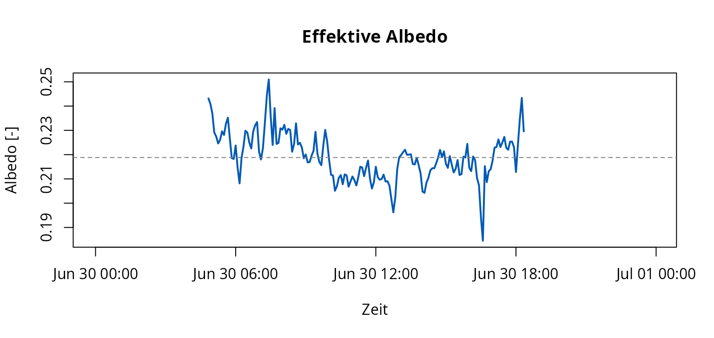
Interpretation. Die Albedo wird hier nicht als
Tabellenwert für „Wiese“ eingesetzt, sondern aus den gemessenen
Strahlungskomponenten berechnet. Dadurch ist sie ein Diagnosewert der
konkreten Messsituation. Sie kann sich ändern, obwohl das Material
gleich bleibt: flacher Sonnenstand, diffuse Bewölkung, feuchte
Vegetation oder Sensorrauschen verändern das Verhältnis von ausgehender
zu einfallender Strahlung. Der Filter bei niedriger Einstrahlung ist
deshalb fachlich nötig. Bei sehr kleinen K_down-Werten kann
ein kleiner Messfehler im Zähler oder Nenner den Quotienten stark
verzerren; dann würde die Albedo mehr Rechenartefakt als
Oberflächeneigenschaft zeigen.
Zusammengesetzter Plot
cols_sw <- c("#D55E00", "#7A7A7A", "#000000")
op <- par(mar = c(6, 4, 3, 1), xpd = NA)
plot(caldern$datetime, caldern$K_down, type = "l", col = cols_sw[1], lwd = 2,
ylim = range(caldern$K_down, caldern$K_up, caldern$K_star, na.rm = TRUE),
xlab = "Zeit", ylab = "W/m²", main = "Kurzwellige Strahlung")
lines(caldern$datetime, caldern$K_up, col = cols_sw[2], lwd = 2)
lines(caldern$datetime, caldern$K_star, col = cols_sw[3], lwd = 2)
legend("bottom", inset = c(0, -0.35), horiz = TRUE, bty = "n",
legend = c("K_down", "K_up", "K*"), col = cols_sw, lty = 1, lwd = 2)
par(op)Interpretation. Der zusammengesetzte Plot zeigt die Bilanzlogik in einer einzigen Grafik: Aus der einfallenden kurzwelligen Strahlung wird die reflektierte kurzwellige Strahlung abgezogen. Die schwarze Linie ist deshalb keine neue Messgröße, sondern die rechnerische Nettowirkung der kurzwelligen Strahlung. Für die spätere Energiebilanz ist genau diese Restgröße relevant: Nicht die gesamte Sonneneinstrahlung steht zur Verfügung, sondern nur der Anteil, der nach Reflexion an der Oberfläche verbleibt.
Workflow-Schritt 3: Langwellige Bilanz und Netto-Strahlung Q*
Die Folien zur langwelligen Aus- und Gegenstrahlung beziehen sich auf Stefan-Boltzmann-Logik, Emissionsvermögen und atmosphärische Gegenstrahlung. Für die Stationsdaten wird daraus die langwellige Bilanz.
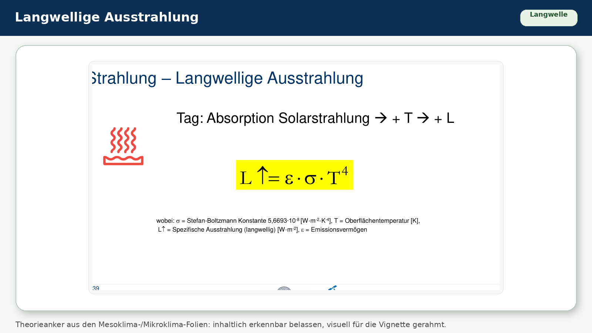
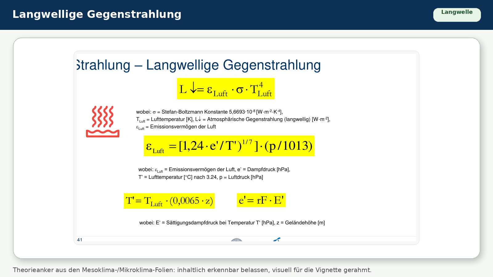
\[ L^{*} = L_{down} - L_{up} \]
\[ Q^{*} = K^{*} + L^{*} \]
# Langwellige Gegenstrahlung aus der Atmosphäre.
caldern$L_down <- caldern$LDnCo
# Langwellige Ausstrahlung der Oberfläche.
caldern$L_up <- caldern$LUpCo
# Langwellige Bilanz.
caldern$L_star <- caldern$L_down - caldern$L_up
# Netto-Strahlung aus Einzelkomponenten.
# Das ist eine Kontrollrechnung, keine neue Messung.
caldern$Q_star_components <- caldern$K_star + caldern$L_star
# Gemessene Netto-Strahlung aus der Datei.
caldern$Q_star_measured <- caldern$rad_netEinzelplots
op <- par(mfrow = c(3, 1), mar = c(3.5, 4, 2, 1))
plot(caldern$datetime, caldern$L_down, type = "l", col = "#0072B2", lwd = 2,
xlab = "Zeit", ylab = "W/m²", main = "L_down: langwellige Gegenstrahlung")
plot(caldern$datetime, caldern$L_up, type = "l", col = "#CC79A7", lwd = 2,
xlab = "Zeit", ylab = "W/m²", main = "L_up: langwellige Ausstrahlung")
plot(caldern$datetime, caldern$L_star, type = "l", col = "#000000", lwd = 2,
xlab = "Zeit", ylab = "W/m²", main = "L*: langwellige Bilanz")
par(op)Interpretation. Die langwellige Strahlung verhält
sich anders als die kurzwellige Sonnenstrahlung. Sie verschwindet nachts
nicht, weil Atmosphäre und Oberfläche auch ohne Sonne Wärme abstrahlen.
L_down beschreibt die atmosphärische Gegenstrahlung,
L_up die Ausstrahlung der Oberfläche. Die Differenz
L_star zeigt, ob die Oberfläche langwellig Energie gewinnt
oder verliert. Für Nicht-Meteorolog:innen ist der zentrale Punkt:
Kurzwellige Strahlung erklärt vor allem den Tagesantrieb durch die
Sonne; langwellige Strahlung erklärt, warum die Oberfläche auch nachts
energetisch aktiv bleibt.
Kontrolle von Q* aus Einzelkomponenten
Die Netto-Strahlung Q* ist der zentrale Eingang in die
Energiebilanz. In der Theorie steht Q* als Strahlungsbilanz
auf der linken Seite der bodennahen Energiebilanz:
\[ 0 = Q^{*} - B - L - V \]
In dieser Vignette entspricht:
| Theorie | Datensatz / Paket | Bedeutung |
|---|---|---|
Q* |
rad_net bzw. rad_bal
|
Netto-Strahlung |
B |
heatflux_soil bzw. soil_flux
|
Bodenwärmestrom |
L |
H, sensible_*
|
fühlbarer Wärmestrom |
V |
LE, latent_*
|
latenter Wärmestrom |
Theoretisch kann Q* aus kurzwelligen und langwelligen
Einzelkomponenten gebildet werden:
\[ K^{*} = K_\downarrow - K_\uparrow \]
\[ L^{*} = L_\downarrow - L_\uparrow \]
\[ Q^{*} = K^{*} + L^{*} \]
Im Datensatz liegt aber zusätzlich bereits eine Spalte
rad_net vor. Deshalb wird hier nicht einfach eine neue
Netto-Strahlung “rekonstruiert”, sondern geprüft, ob die vorhandene
Spalte rad_net und die Summe aus Einzelkomponenten dieselbe
Bilanzebene beschreiben.
# Kurzwellige Komponenten:
# K_down ist die einfallende kurzwellige Strahlung.
# K_up ist die reflektierte kurzwellige Strahlung.
caldern$K_down <- caldern$rad_sw_in
caldern$K_up <- caldern$rad_sw_out
# Kurzwellige Bilanz.
caldern$K_star <- caldern$K_down - caldern$K_up
# Langwellige Komponenten:
# L_down ist die atmosphärische Gegenstrahlung.
# L_up ist die langwellige Ausstrahlung der Oberfläche.
caldern$L_down <- caldern$LDnCo
caldern$L_up <- caldern$LUpCo
# Langwellige Bilanz.
caldern$L_star <- caldern$L_down - caldern$L_up
# Vorhandene Netto-Strahlung aus dem Datensatz.
caldern$Q_star_measured <- caldern$rad_net
# Kontrollgröße aus Einzelkomponenten.
# Diese Größe wird hier nur diagnostisch verwendet.
caldern$Q_star_components <- caldern$K_star + caldern$L_star
# Differenz zwischen Komponentensumme und vorhandener Netto-Strahlung.
# Positive Werte bedeuten:
# K* + L* ist größer als rad_net.
caldern$Q_star_difference <- caldern$Q_star_components - caldern$Q_star_measured
summary(caldern$Q_star_difference)
#> Min. 1st Qu. Median Mean 3rd Qu. Max.
#> 3.595 32.331 78.013 74.078 100.515 187.700
cols_q <- c("#000000", "#0072B2")
op <- par(mar = c(6, 4, 3, 1), xpd = NA)
plot(
caldern$datetime,
caldern$Q_star_measured,
type = "l",
col = cols_q[1],
lwd = 2,
ylim = range(caldern$Q_star_measured, caldern$Q_star_components, na.rm = TRUE),
xlab = "Zeit",
ylab = "W/m²",
main = "Q*: vorhandene Netto-Strahlung und Komponentensumme"
)
lines(
caldern$datetime,
caldern$Q_star_components,
col = cols_q[2],
lwd = 2
)
legend(
"bottom",
inset = c(0, -0.35),
horiz = TRUE,
bty = "n",
legend = c("Q* vorhanden: rad_net", "Kontrolle: K* + L*"),
col = cols_q,
lty = 1,
lwd = 2
)
par(op)Interpretation. Die beiden Linien sind nicht
deckungsgleich. Die Differenz zwischen Komponentensumme und vorhandener
Netto-Strahlung ist durchgehend positiv und reicht in diesem Tag von
etwa 3.6 bis 187.7 W/m²; im Mittel liegt sie bei 74.1 W/m². Das ist kein
kleiner Rundungsfehler, sondern eine eigene Datendiagnose. Für die
weitere Rechnung heißt das: rad_net und
K_down - K_up + L_down - L_up dürfen in diesem Datensatz
nicht unbesehen als dieselbe Netto-Strahlung behandelt werden.
Das ist zentral, weil die meisten Wärmeflussmethoden direkt an der
verfügbaren Energie hängen. Wenn Q_star um mehrere zehn
W/m² verschoben ist, verschieben sich auch Priestley-Taylor, Bowen,
Bulk-Residual und der Energieanteil von Penman. Monin-Obukhov/Profile
nutzt Q_star zwar nicht als direkten Energieterm, braucht
Q_star - B aber als Plausibilitätsmaßstab. Eine unklare
Netto-Strahlung macht deshalb nicht nur eine Kurve unsicher, sondern den
gesamten Methodenvergleich schwerer interpretierbar.
plot(
caldern$Q_star_measured,
caldern$Q_star_components,
pch = 16,
col = rgb(0, 0, 0, 0.35),
xlab = "Q* vorhanden: rad_net [W/m²]",
ylab = "Kontrolle: K* + L* [W/m²]",
main = "Q*: rad_net gegen Komponentensumme"
)
abline(0, 1, lty = 2, col = "grey40")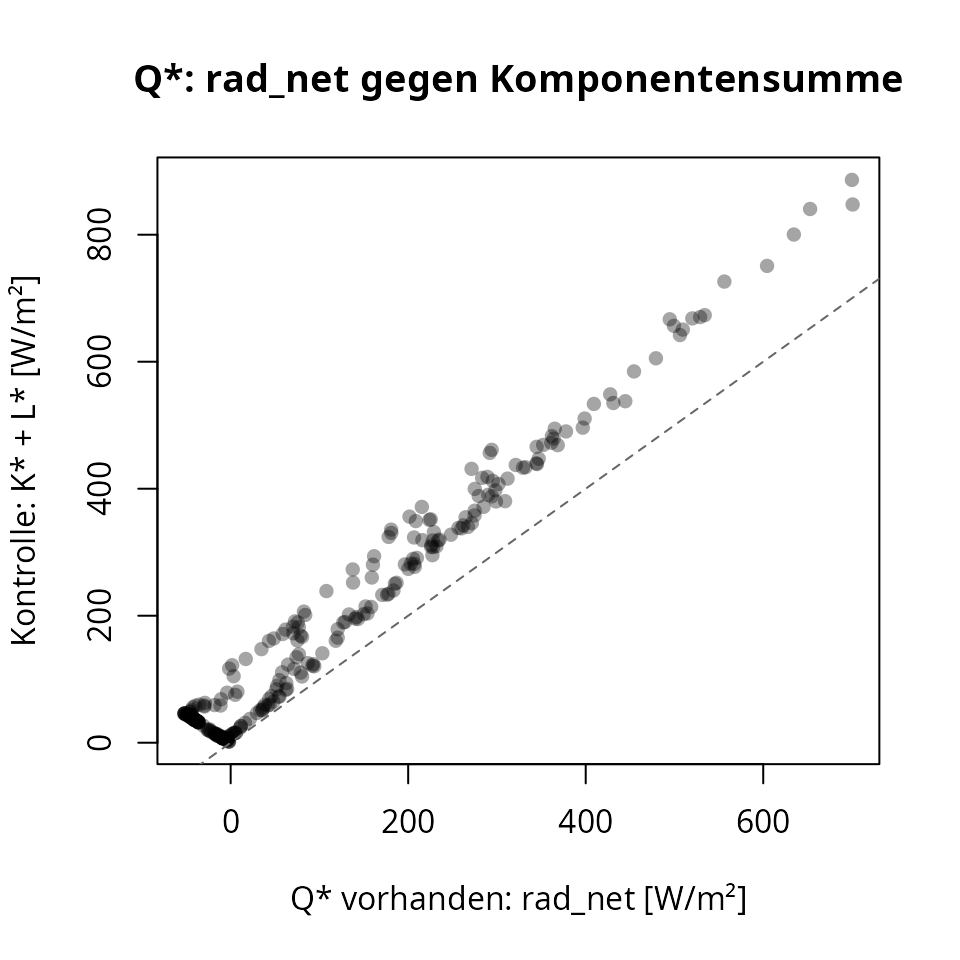
Interpretation. Der Scatterplot macht sichtbar, dass
es sich nicht um zufälliges Hin-und-Her-Rauschen handelt. Die Punkte
liegen systematisch oberhalb der 1:1-Linie. Die aus Einzelkomponenten
berechnete Netto-Strahlung ist also fast durchgehend größer als
rad_net. Praktisch bedeutet das: Die Komponentensumme kann
nicht einfach als Ersatz für rad_net verwendet werden, ohne
vorher zu klären, ob beide Größen dieselbe Korrektur, dieselbe
Mittelung, dieselbe Vorzeichenkonvention und dieselbe Sensorverarbeitung
repräsentieren.
plot(
caldern$datetime,
caldern$Q_star_difference,
type = "l",
col = "#D55E00",
lwd = 2,
xlab = "Zeit",
ylab = "K* + L* - rad_net [W/m²]",
main = "Differenz zwischen Komponentensumme und rad_net"
)
abline(h = 0, lty = 2, col = "grey40")
Interpretation. Die Zeitreihe zeigt, wann die
Abweichung besonders groß wird. Wenn sie im Tagesverlauf mit der
Strahlung anwächst, ist sie nicht als zufälliger Messpunktfehler zu
lesen. Dann liegt näher, dass die beiden Netto-Strahlungsgrößen auf
unterschiedlichen Verarbeitungsschritten beruhen: zum Beispiel anderer
Loggerkanal, andere Korrektur der langwelligen Komponenten,
unterschiedliche Mittelungsfenster oder nicht identische
Vorzeichenlogik. Für den Workflow reicht hier eine klare Entscheidung:
Weitergerechnet wird mit der vorhandenen Arbeitsgröße
rad_net; die Komponentensumme bleibt eine Qualitäts- und
Plausibilitätskontrolle.
plot(
caldern$K_down,
caldern$Q_star_difference,
pch = 16,
col = rgb(0, 0, 0, 0.35),
xlab = "K_down [W/m²]",
ylab = "K* + L* - rad_net [W/m²]",
main = "Abweichung in Abhängigkeit vom solaren Antrieb"
)
abline(h = 0, lty = 2, col = "grey40")
Interpretation. Die Kopplung an K_down
zeigt, dass die Abweichung mit dem solaren Tagesgang zusammenhängt. Das
spricht gegen eine reine Zufallsstreuung. Für die weitere Auswertung ist
die Konsequenz wichtiger als die exakte Ursache: Die Netto-Strahlung
muss als bewusste Arbeitsgröße gewählt werden. In dieser Vignette wird
rad_net als Q_star verwendet, während
K_star + L_star als Kontrollgröße stehen bleibt.
Diese Prüfung ist der methodische Drehpunkt der Vignette. Ohne eine klare Arbeitsgröße für
Q_starwäre der spätere Methodenvergleich uneindeutig: Unterschiede zwischen PT, Bulk-Residual, Bowen oder Penman könnten dann teilweise aus einer verschobenen Strahlungsbilanz stammen und nicht aus der eigentlichen Methode. Monin-Obukhov/Profile ist davon weniger direkt betroffen, weil dieser Pfad aus Profilen rechnet; zur Plausibilitätsprüfung gegen die verfügbare Energie braucht man aber auch dort eine verlässliche Vergleichsgröße.
Workflow-Schritt 4: Bodenwärmestrom und verfügbare Energie
Die Bodenwärme-Folien zeigen den Bodenwärmestrom als
Wärmeleitungsproblem. In den Caldern-Daten wird B direkt
als heatflux_soil verwendet.
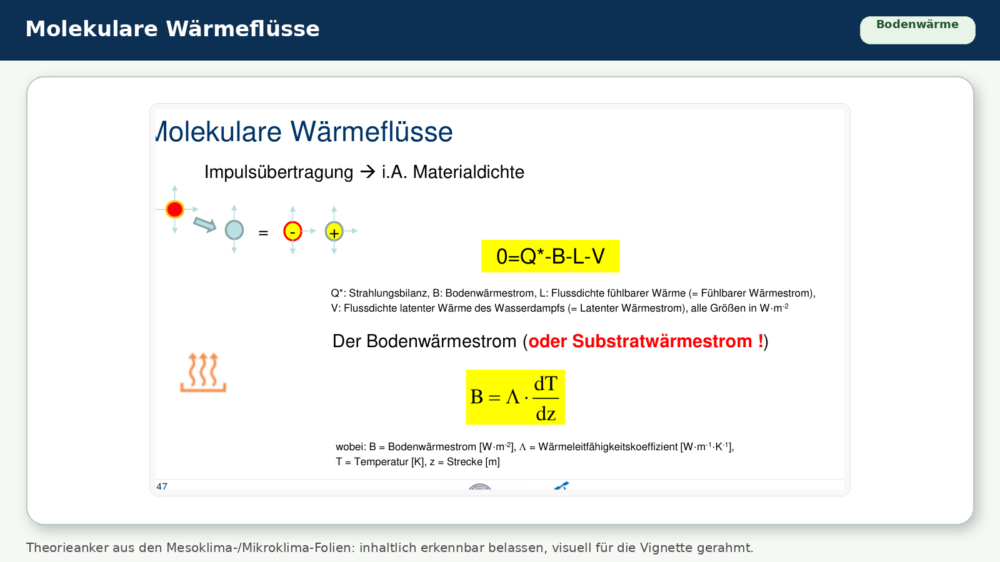
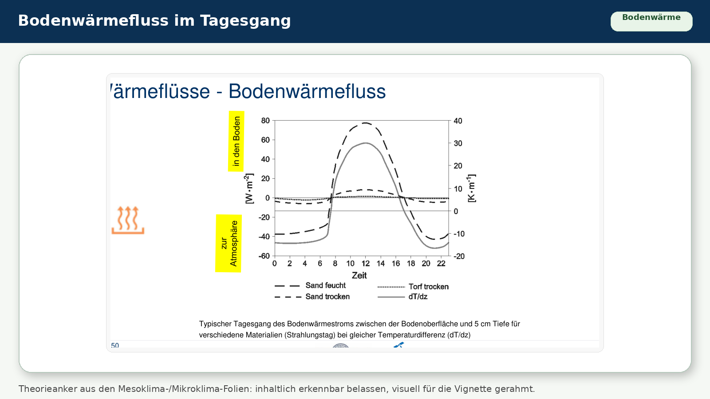
Die verfügbare Energie für fühlbaren und latenten Wärmestrom ist:
\[ Q^{*} - B \]
# Theoriegröße Q*: gemessene Netto-Strahlung.
caldern$Q_star <- caldern$Q_star_measured
# Theoriegröße B: gemessener Bodenwärmestrom.
caldern$B <- caldern$heatflux_soil
# Energie, die für L und V verfügbar bleibt.
caldern$Q_minus_B <- caldern$Q_star - caldern$BEinzelplots
op <- par(mfrow = c(3, 1), mar = c(3.5, 4, 2, 1))
plot(caldern$datetime, caldern$Q_star, type = "l", col = "#000000", lwd = 2,
xlab = "Zeit", ylab = "W/m²", main = "Q*: Netto-Strahlung")
plot(caldern$datetime, caldern$B, type = "l", col = "#009E73", lwd = 2,
xlab = "Zeit", ylab = "W/m²", main = "B: Bodenwärmestrom")
plot(caldern$datetime, caldern$Q_minus_B, type = "l", col = "#D55E00", lwd = 2,
xlab = "Zeit", ylab = "W/m²", main = "Q* - B: verfügbare Energie")
par(op)Interpretation. Q_star ist der
radiative Nettoantrieb des Tages: tagsüber positiv durch die Sonne,
nachts häufig negativ oder schwach, weil langwellige Verluste
dominieren. B beschreibt den Bodenwärmestrom. In der hier
verwendeten Vorzeichenkonvention bedeutet ein positiver Bodenwärmestrom,
dass Energie in den Boden geht und damit nicht mehr für die turbulenten
Flüsse in die Luft zur Verfügung steht. Q_star - B ist
deshalb die eigentliche Arbeitsgröße für die energiegebundenen Methoden.
Sie sagt: So viel Energie bleibt nach Abzug des Bodenanteils für
fühlbaren und latenten Wärmestrom übrig.
Zusammengesetzter Plot
cols_energy <- c("#000000", "#009E73", "#D55E00")
op <- par(mar = c(6, 4, 3, 1), xpd = NA)
plot(caldern$datetime, caldern$Q_star, type = "l", col = cols_energy[1], lwd = 2,
ylim = range(caldern$Q_star, caldern$B, caldern$Q_minus_B, na.rm = TRUE),
xlab = "Zeit", ylab = "W/m²", main = "Q*, B und Q* - B")
lines(caldern$datetime, caldern$B, col = cols_energy[2], lwd = 2)
lines(caldern$datetime, caldern$Q_minus_B, col = cols_energy[3], lwd = 2)
legend("bottom", inset = c(0, -0.35), horiz = TRUE, bty = "n",
legend = c("Q*", "B", "Q* - B"), col = cols_energy, lty = 1, lwd = 2)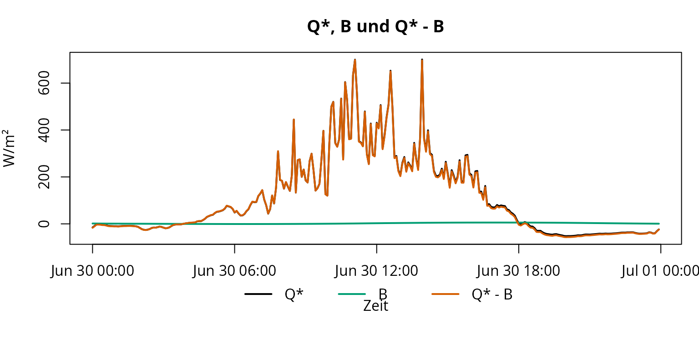
par(op)Workflow-Schritt 5: Methodenüberblick und Rollen der Verfahren
Methodenüberblick
Die folgende Übersichtsgrafik zeigt die gemeinsame Messsituation: eine Wiesenstation mit Strahlungsbilanz, Bodenwärmestrom, Temperatur-, Feuchte- und Windmessungen in mehreren Höhen. Alle folgenden Verfahren greifen auf dieselbe Stationslogik zurück, verwenden daraus aber unterschiedliche Teilinformationen.
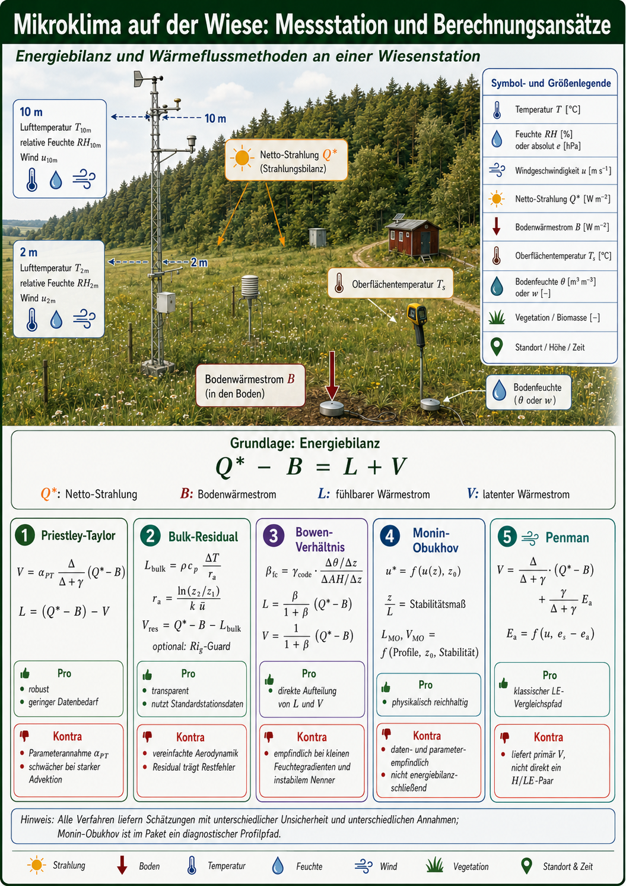
Die Verfahren sind nicht als gleichartige Messverfahren zu lesen. Sie
sind unterschiedliche Rechenpfade mit unterschiedlicher Nähe zur
Energiebilanz, zu Gradienten und zu Profilannahmen. Für die eigentliche
Auswertung wird der Paketpfad turb_flux_bulk_residual()
verwendet.
| Methode | Hauptfrage | Direkte Eingänge | Ergebnis | Rolle im Workflow |
|---|---|---|---|---|
| Priestley-Taylor | Wie wird die verfügbare Energie stabil partitioniert? |
Q_star, B, Parameter |
L_pt, V_pt
|
erster, energiegebundener Paketpfad |
| Bulk-Residual | Wie schätzt das Paket L aus Temperaturgradient und Wind
und berechnet V als Residuum? |
weather_station, sensible_bulk(),
latent_bulk_residual()
|
L_bulk_pkg, V_bulk_pkg
|
residualer Paketpfad, optional mit Richardson-Guard |
| Bowen-Verhältnis | Wie teilt ein Temperatur-/Feuchtegradient die verfügbare Energie auf? | Temperaturgradient, Feuchtegradient, Q_star,
B
|
L_bowen, V_bowen
|
gradientenempfindliche Partitionierung |
| Monin-Obukhov/Profile | Wie reagieren Profilmethoden auf Gradienten und Stabilität? | Windprofil, Temperaturprofil, Feuchteprofil, Stabilitätsdiagnostik |
L_monin, V_monin
|
profilbasiert, nicht bilanznormiert/energie-schließend |
| Penman | Wie groß ist der latente Wärmestrom aus Energie- und Verdunstungsantrieb? |
Q_star, B, Wind, Temperatur, Feuchte,
Oberfläche |
V_penman |
LE-only Vergleichspfad |
1. Priestley-Taylor
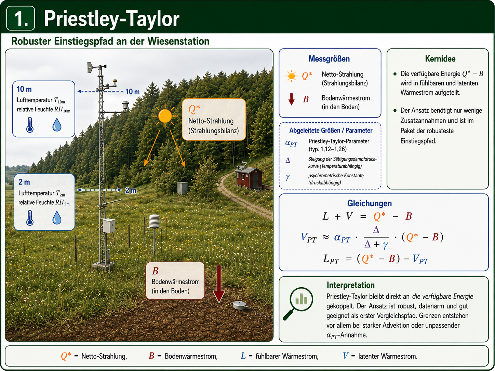
Priestley-Taylor ist in dieser Vignette der stabile erste Paketpfad. Der Ansatz bleibt direkt an die verfügbare Energie gebunden und benötigt keine empfindliche Aufteilung über kleine Feuchtegradienten.
\[ L + V = Q^{*} - B \]
\[ V_{PT} \approx \alpha_{PT} \frac{\Delta}{\Delta + \gamma} (Q^{*} - B) \]
\[ L_{PT} = (Q^{*} - B) - V_{PT} \]
Der Vorteil dieses Pfads ist die Bilanzbindung: Wenn
Q_star und B korrekt gesetzt sind, bleibt die
Summe aus L_PT und V_PT auf der verfügbaren
Energie.
2. Bulk-Residual mit optionalem Richardson-Guard
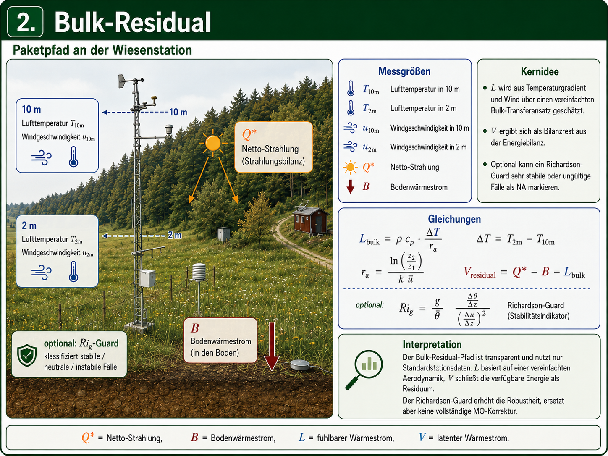
Der Paketpfad turb_flux_bulk_residual() nutzt eine
einfache Bulk-Transfer-Schätzung für den fühlbaren Wärmestrom und
berechnet den latenten Wärmestrom anschließend als Residuum. Die
Grundlogik ist:
\[ L_{bulk} = \rho c_p \frac{\Delta T}{r_a} \]
\[ r_a = \frac{\ln(z_2 / z_1)}{k \bar{u}} \]
\[ V_{residual} = Q^{*} - B - L_{bulk} \]
Zusätzlich kann sensible_bulk() mit
stability_method = "ri_guard" eine Gradient-Richardson-Zahl
berechnen:
\[ Ri_g = \frac{g}{\bar{\theta}} \frac{\Delta \theta / \Delta z} {(\Delta u / \Delta z)^2} \]
Der Guard ist nicht der Default. Er wird nur aktiviert, wenn
stability_method = "ri_guard" gesetzt wird. Instabile,
neutrale und moderat stabile Fälle behalten den neutralen Bulk-Wert.
Sehr stabile, ungültige oder schwach geschwerte Fälle werden auf
NA gesetzt. Wenn L_bulk dadurch
NA wird, wird auch das Residuum V_bulk
NA. Das verhindert, dass eine algebraische
Residualschließung einen nicht belastbaren fühlbaren Wärmestrom
verdeckt.
Die aktuell eingebundene Bulk-Grafik zeigt noch die Grundlogik der früheren manuellen Referenz. Sie wird im nächsten Abbildungsschritt auf den Paketpfad mit optionalem Richardson-Guard umgestellt.
3. Bowen-Verhältnis
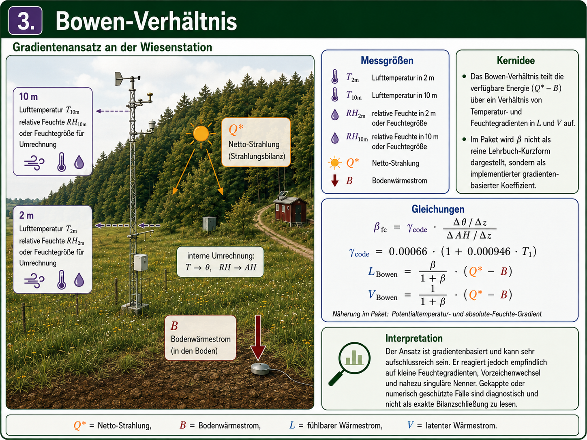
Der Bowen-Ansatz nutzt ein Verhältnis aus Temperatur- und Feuchtegradient. Er verteilt die verfügbare Energie auf fühlbaren und latenten Wärmestrom.
\[ \beta \approx \frac{\Delta T}{\Delta e} \]
Didaktisch entscheidend ist hier das Gradientenverhältnis. Die
Paketimplementierung ist spezifischer: Sie verwendet eine
Potentialtemperaturdifferenz und eine absolute Feuchtedifferenz mit
einem empirischen fieldClim-Koeffizienten. Deshalb wird
Bowen in dieser Vignette als Paketpfad interpretiert, nicht als
allgemeine textbook-Formel.
\[ L_{Bowen} = \frac{\beta}{1 + \beta} (Q^{*} - B) \]
\[ V_{Bowen} = \frac{1}{1 + \beta} (Q^{*} - B) \]
Der Ansatz ist für finite, nicht gekappte Fälle bilanzgebunden, aber
stark gradientenempfindlich. Wenn Feuchtegradienten sehr klein werden,
Vorzeichen wechseln, beta nicht endlich ist oder
1 + beta nahe null liegt, können einzelne Zeitschritte
stark ausschlagen. Gekappte oder nicht-endliche Fälle werden deshalb als
nicht belastbare Bowen-Zeitschritte behandelt und nicht als exakte
Aufteilung von \(Q^* - B\)
interpretiert.
4. Monin-Obukhov/Profile
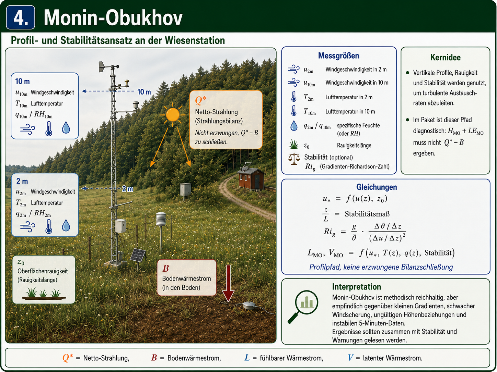
Der Monin-Obukhov/Profile-Pfad ist in fieldClim kein
Verfahren, das die verfügbare Energie automatisch auf \(L\) und \(V\) verteilt. Er berechnet Wärmeflüsse aus
den gemessenen Unterschieden zwischen zwei Höhen: Temperatur, Feuchte,
Wind und Messhöhe gehen direkt in die Profilrechnung ein. Deshalb
reagiert der Ansatz besonders empfindlich, wenn diese Unterschiede sehr
klein, verrauscht oder widersprüchlich sind.
Die aktuelle Paketfassung fängt solche problematischen Fälle
kontrolliert ab. Wenn zwischen den beiden Höhen kein Temperaturgradient
vorliegt, wird der fühlbare Wärmestrom für diesen Zeitschritt auf 0
gesetzt. Wenn kein Feuchtegradient vorliegt, wird der latente Wärmestrom
auf 0 gesetzt. Wenn Messhöhen ungültig sind, Windwerte fehlen oder
rechnerisch nicht auswertbare Profilzustände entstehen, gibt die
Funktion für diese Zeitschritte NA zurück und erzeugt eine
Warnung.
Wichtig ist: Diese Absicherung macht den Monin-Obukhov/Profile-Pfad nicht zu einem bilanzschließenden Verfahren. Große, aber rechnerisch endliche Werte werden nicht automatisch auf \(Q^* - B\) begrenzt. Deshalb müssen die Ergebnisse anschließend gegen die verfügbare Energie geprüft werden. Wenn \(L + V\) deutlich größer oder kleiner als \(Q^* - B\) ist, spricht das nicht sofort für ein reales Wärmeflussereignis, sondern für eine kritische Profil- oder Stabilitätssituation im Datensatz.
Für die Interpretation gilt deshalb: Monin-Obukhov/Profile-Werte werden nicht auf die verfügbare Energie \(Q^* - B\) normiert. Es wird also nicht erwartet, dass
\[ L_{MO} + V_{MO} = Q^* - B \]
gilt. Die Gleichung dient hier nur als Plausibilitätsprüfung. Wenn \(L_{MO} + V_{MO}\) deutlich von \(Q^* - B\) abweicht, spricht das für empfindliche oder problematische Profilbedingungen: kleine Temperatur- oder Feuchtegradienten, schwache Windunterschiede, ungünstige Stabilitätsannahmen oder 5-Minuten-Rauschen.
Große Abweichungen sind deshalb nicht automatisch ein Rechenfehler. Sie zeigen, dass der Profilpfad unter den vorliegenden Daten- und Stabilitätsbedingungen nicht wie ein energiegebundener Partitionierungsansatz gelesen werden darf.
5. Penman
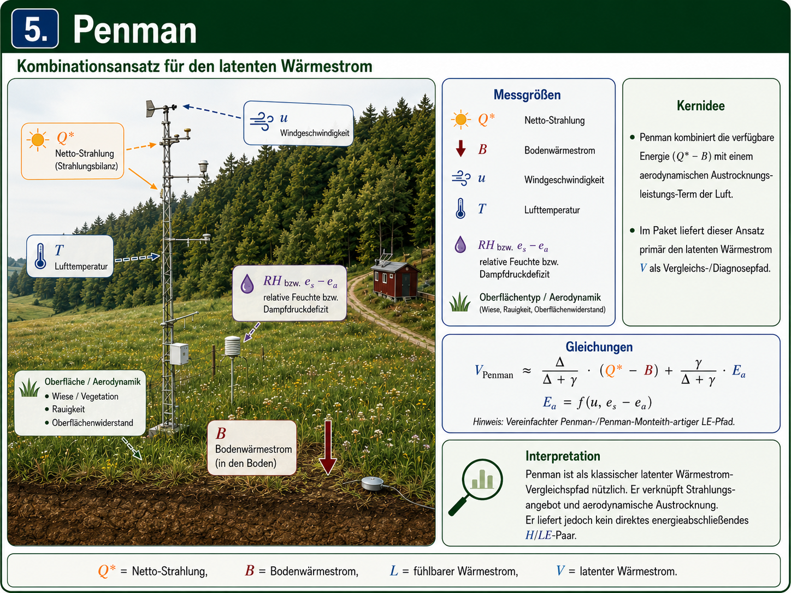
Penman ist ein Kombinationsansatz für den latenten Wärmestrom. Er
verbindet einen Energieterm mit einem aerodynamischen Verdunstungsterm.
Im aktuellen Paketpfad liefert Penman V, aber keinen
eigenen fühlbaren Wärmestrom L.
\[ V_{Penman} \approx \frac{\Delta}{\Delta + \gamma}(Q^{*} - B) + \frac{\gamma}{\Delta + \gamma} E_a \]
\[ E_a = f(u, e_s - e_a) \]
Penman ist deshalb ein Vergleichs- und Prüfpfad für V,
aber keine vollständige L/V-Partitionierung
wie Priestley-Taylor oder Bowen.
Workflow-Schritt 6: Übergabe an das fieldClim-Objekt
Das weather_station-Objekt ist die zentrale
Paketstruktur. Es speichert nicht nur Messspalten, sondern auch Standort
und Modellparameter. Dadurch können verschiedene Funktionen auf dieselbe
strukturierte Datenbasis zugreifen.
ws <- build_weather_station(
# Zeitachse.
datetime = caldern$datetime,
# Standort der Station.
lon = 8.6832,
lat = 50.8405,
elev = 261,
# Standardtemperatur und Standardfeuchte.
temp = caldern$Ta_2m,
rh = caldern$Huma_2m,
# Profilgrößen für gradienten- und stabilitätsbezogene Methoden.
t1 = caldern$Ta_2m,
t2 = caldern$Ta_10m,
hum1 = caldern$Huma_2m,
hum2 = caldern$Huma_10m,
# Windprofil und Messhöhen.
v1 = caldern$Windspeed_2m,
v2 = caldern$Windspeed_10m,
z1 = 2,
z2 = 10,
# Paketnamen für Theoriegrößen:
# rad_bal entspricht Q*, soil_flux entspricht B.
rad_bal = caldern$Q_star,
soil_flux = caldern$B,
# Weitere Oberflächen- und Bodeninformationen.
moisture = caldern$water_vol_soil,
surface_temp = caldern$Ts,
# Oberflächentyp als Modellannahme.
surface_type = "field",
# Beobachtungshöhe für Verfahren, die eine Referenzhöhe brauchen.
obs_height = 2
)
# Klasse und enthaltene Felder prüfen.
class(ws)
#> [1] "weather_station"
names(ws)
#> [1] "datetime" "lon" "lat" "elev" "temp"
#> [6] "rh" "t1" "t2" "hum1" "hum2"
#> [11] "v1" "v2" "z1" "z2" "rad_bal"
#> [16] "soil_flux" "moisture" "surface_temp" "surface_type" "obs_height"
# Als Tabelle ausgeben.
head(as.data.frame(ws))
#> datetime lon lat elev temp rh t1 t2 hum1 hum2
#> 1 2017-06-30 00:00:00 8.6832 50.8405 261 13.09 100.0 13.09 13.60 100.0 97.6
#> 2 2017-06-30 00:05:00 8.6832 50.8405 261 13.01 100.0 13.01 13.51 100.0 97.7
#> 3 2017-06-30 00:10:00 8.6832 50.8405 261 13.02 100.0 13.02 13.66 100.0 96.5
#> 4 2017-06-30 00:15:00 8.6832 50.8405 261 13.16 100.0 13.16 13.76 100.0 96.1
#> 5 2017-06-30 00:20:00 8.6832 50.8405 261 13.27 100.0 13.27 13.80 100.0 96.4
#> 6 2017-06-30 00:25:00 8.6832 50.8405 261 13.69 98.1 13.69 14.25 98.1 92.4
#> v1 v2 z1 z2 rad_bal soil_flux moisture surface_temp surface_type
#> 1 0.448 0.529 2 10 -15.200 1.551533 0.344 16.31 field
#> 2 0.380 0.409 2 10 -8.920 1.492695 0.344 16.29 field
#> 3 0.548 0.670 2 10 -1.965 1.448708 0.344 16.25 field
#> 4 0.581 0.658 2 10 -1.790 1.390439 0.344 16.25 field
#> 5 0.764 0.887 2 10 -2.469 1.325316 0.344 16.22 field
#> 6 0.589 0.744 2 10 -3.857 1.268762 0.344 16.19 field
#> obs_height
#> 1 2
#> 2 2
#> 3 2
#> 4 2
#> 5 2
#> 6 2Interpretation. Das
weather_station-Objekt ist mehr als eine schön benannte
Tabelle. Es legt fest, welche Spalte welche physikalische Rolle
übernimmt: rad_bal ist die Arbeitsgröße für
Q_star, soil_flux ist B,
t1/t2, hum1/hum2 und v1/v2 bilden
die Vertikalprofile, und surface_type = "field" setzt die
Oberflächenannahme für Methoden, die sie benötigen. Genau hier wird aus
einem heterogenen CSV-Datensatz ein konsistenter Paketdatensatz. Fehler
an dieser Stelle sind besonders folgenreich, weil sie anschließend von
allen Methoden übernommen werden.
Workflow-Schritt 7: Paketmethoden für Wärmeflüsse
Priestley-Taylor als erster Paketpfad
Priestley-Taylor nutzt die verfügbare Energie Q* - B und
eine empirische Verdunstungsparametrisierung. Der Vorteil im Einstieg
ist nicht, dass die Methode „wahrer“ wäre, sondern dass sie keine
instabilen Gradientenquotienten benötigt.
# Nur den Priestley-Taylor-Pfad berechnen.
# Dieser Pfad ist als erster Paketvergleich stabiler als der volle Methodenworkflow.
flux_pt <- turb_flux_calc(ws, pt_only = TRUE)
# Ergebnisse zurück in den Auswertungsdatensatz schreiben.
caldern$L_pt <- flux_pt$sensible_priestley_taylor
caldern$V_pt <- flux_pt$latent_priestley_taylor
caldern$L_plus_V_pt <- caldern$L_pt + caldern$V_pt
op <- par(mfrow = c(2, 1), mar = c(3.5, 4, 2, 1))
plot(caldern$datetime, caldern$L_pt, type = "l", col = "#CC79A7", lwd = 2,
xlab = "Zeit", ylab = "W/m²", main = "Priestley-Taylor: L")
abline(h = 0, lty = 2, col = "grey50")
plot(caldern$datetime, caldern$V_pt, type = "l", col = "#56B4E9", lwd = 2,
xlab = "Zeit", ylab = "W/m²", main = "Priestley-Taylor: V")
abline(h = 0, lty = 2, col = "grey50")
par(op)
cols_pt <- c("#D55E00", "#000000")
op <- par(mar = c(6, 4, 3, 1), xpd = NA)
plot(caldern$datetime, caldern$Q_minus_B, type = "l", col = cols_pt[1], lwd = 2,
ylim = range(caldern$Q_minus_B, caldern$L_plus_V_pt, na.rm = TRUE),
xlab = "Zeit", ylab = "W/m²", main = "Priestley-Taylor: Energieabschluss")
lines(caldern$datetime, caldern$L_plus_V_pt, col = cols_pt[2], lwd = 2)
legend("bottom", inset = c(0, -0.35), horiz = TRUE, bty = "n",
legend = c("Q* - B", "L + V nach PT"), col = cols_pt, lty = 1, lwd = 2)
par(op)Interpretation. Priestley-Taylor ist hier der
sauberste Einstieg in den Methodenvergleich. Die Methode nimmt die
verfügbare Energie und teilt sie mit einem kompakten
Verdunstungsparameter auf L und V auf. Im
Ergebnis liegt der Tagesmittelwert für L bei 25.1 W/m² und
für V bei 83.6 W/m². Zusammen ergibt das im Mittel genau
die verfügbare Energie.
Das macht PT nicht automatisch „richtiger“ als die anderen Methoden.
Der Vorteil liegt in der Lesbarkeit: Wenn Q_star und
B stimmen, ist der Energieabschluss sofort nachvollziehbar.
Die Methode vermeidet kleine Feuchtegradienten, Windschere und
Stabilitätsklassifikation. Deshalb eignet sie sich in dieser Vignette
als erster Vergleichspfad: Sie zeigt, wie die Energiebilanz aussieht,
bevor empfindlichere Profil- oder Gradientenmethoden hinzukommen.
Bulk-Residual im Paket mit Richardson-Guard
Der Bulk-Residual-Pfad wird jetzt als Paketmethode behandelt, nicht mehr als separater manueller Workflow-Schritt. Für den Vergleich wird der optionale Richardson-Guard aktiviert, weil der Caldern-Datensatz zwei Temperatur- und Windhöhen enthält.
flux_bulk_guarded <- turb_flux_bulk_residual(
ws,
stability_method = "ri_guard"
)
caldern$L_bulk_pkg <- flux_bulk_guarded$sensible_bulk
caldern$V_bulk_pkg <- flux_bulk_guarded$latent_bulk_residual
caldern$bulk_Ri_g <- attr(flux_bulk_guarded$sensible_bulk, "bulk_Ri_g")
caldern$bulk_stability <- attr(flux_bulk_guarded$sensible_bulk, "bulk_stability")
table(caldern$bulk_stability, useNA = "ifany")
#>
#> neutral stable unstable very_stable
#> 1 5 107 175
op <- par(mfrow = c(2, 1), mar = c(3.5, 4, 2, 1))
plot(caldern$datetime, caldern$L_bulk_pkg, type = "l", col = "#666666", lwd = 2,
xlab = "Zeit", ylab = "W/m²", main = "Bulk-Residual im Paket: L mit ri_guard")
abline(h = 0, lty = 2, col = "grey50")
plot(caldern$datetime, caldern$V_bulk_pkg, type = "l", col = "#56B4E9", lwd = 2,
xlab = "Zeit", ylab = "W/m²", main = "Bulk-Residual im Paket: V als Residuum")
abline(h = 0, lty = 2, col = "grey50")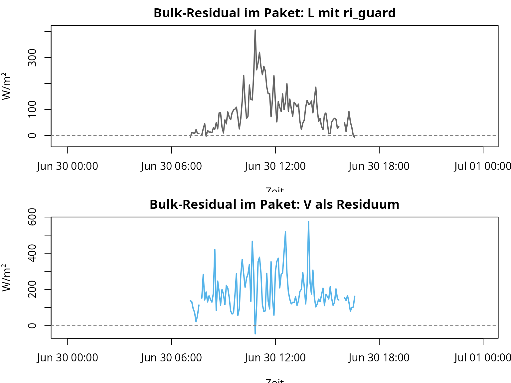
par(op)Interpretation. Der Bulk-Residual-Pfad arbeitet
anders als PT. Zuerst wird L aus Temperaturunterschied und
Wind abgeschätzt; erst danach wird V als Rest der
Energiebilanz berechnet. Mit aktiviertem Richardson-Guard bleiben in
diesem Datensatz nur 113 von 288 Zeitschritten als gültige
Bulk-Residual-Werte übrig. Die Stabilitätszählung zeigt warum: 175
Zeitschritte werden als sehr stabil klassifiziert und deshalb nicht als
robuste neutrale Bulk-Flüsse weitergeführt.
Das ist kein Fehler, sondern genau die Funktion des Guards. Der Guard
macht aus Bulk-Residual kein vollständiges Monin-Obukhov-Verfahren und
korrigiert die gültigen Flüsse nicht. Er verhindert nur, dass ein
neutraler Bulk-Ansatz dort scheinbar plausible Zahlen liefert, wo das
Zwei-Höhen-Profil selbst sagt: Diese Situation ist sehr stabil, schwach
geschert oder numerisch nicht belastbar. Für die gültigen Zeitschritte
bleibt die Residualrechnung transparent: V ist der
Energierest nach Q_star, B und
L_bulk.
Voller Methodenworkflow
# Alle im Sammelworkflow verfügbaren Methoden berechnen.
# Bulk-Residual wurde oben separat berechnet, weil hier der Richardson-Guard
# explizit verwendet wird.
flux_all <- turb_flux_calc(ws)
caldern$L_bowen <- flux_all$sensible_bowen
caldern$V_bowen <- flux_all$latent_bowen
caldern$L_monin <- flux_all$sensible_monin
caldern$V_monin <- flux_all$latent_monin
caldern$V_penman <- flux_all$latent_penman
L_summary <- data.frame(
Methode = c(
"Priestley-Taylor",
"Bulk-Residual Paket (ri_guard)",
"Bowen",
"Monin-Obukhov/Profile"
),
L_Mittel_W_m2 = c(
mean(caldern$L_pt, na.rm = TRUE),
mean(caldern$L_bulk_pkg, na.rm = TRUE),
mean(caldern$L_bowen, na.rm = TRUE),
mean(caldern$L_monin, na.rm = TRUE)
)
)
V_summary <- data.frame(
Methode = c(
"Priestley-Taylor",
"Bulk-Residual Paket (ri_guard)",
"Bowen",
"Monin-Obukhov/Profile",
"Penman"
),
V_Mittel_W_m2 = c(
mean(caldern$V_pt, na.rm = TRUE),
mean(caldern$V_bulk_pkg, na.rm = TRUE),
mean(caldern$V_bowen, na.rm = TRUE),
mean(caldern$V_monin, na.rm = TRUE),
mean(caldern$V_penman, na.rm = TRUE)
)
)
L_summary[, -1] <- round(L_summary[, -1], 1)
V_summary[, -1] <- round(V_summary[, -1], 1)
L_summary
#> Methode L_Mittel_W_m2
#> 1 Priestley-Taylor 25.1
#> 2 Bulk-Residual Paket (ri_guard) 90.9
#> 3 Bowen -21.1
#> 4 Monin-Obukhov/Profile 104.2
V_summary
#> Methode V_Mittel_W_m2
#> 1 Priestley-Taylor 83.6
#> 2 Bulk-Residual Paket (ri_guard) 188.7
#> 3 Bowen 129.8
#> 4 Monin-Obukhov/Profile 52.7
#> 5 Penman 13.2Interpretation. Die Tabellen zeigen keine Rangfolge, sondern verschiedene Antworten auf verschiedene methodische Fragen.
PT liefert mit 25.1 W/m² für L und 83.6 W/m² für
V einen moderaten, energiegebundenen Referenzverlauf.
Bulk-Residual liegt für die gültigen, nicht geguardeten Zeitschritte
deutlich höher (L: 90.9 W/m², V: 188.7 W/m²),
weil nur ein Teil des Tages nach dem Richardson-Screening übrig bleibt
und diese gültigen Zeitpunkte nicht denselben Tagesmittelwert wie alle
288 Messzeitpunkte repräsentieren.
Bowen zeigt einen negativen Tagesmittelwert für L (-21.1
W/m²), aber einen hohen latenten Anteil (129.8 W/m²). Das ist ein
Hinweis darauf, dass Mittelwerte bei gradientenempfindlichen Methoden
trügerisch sein können: Einzelne starke positive und negative
Partitionierungen können sich im Mittel teilweise aufheben.
Penman steht separat, weil es nur V liefert; der
Mittelwert von 13.2 W/m² ist daher kein vollständiges
L/V-Paar.
Monin-Obukhov/Profile liefert im Mittel etwa 104 W/m² fühlbaren und 53 W/m² latenten Wärmestrom. Diese Werte entstehen aus Temperatur-, Feuchte- und Windprofilen, nicht aus einer Aufteilung der verfügbaren Energie. Sie müssen deshalb anders gelesen werden als Priestley-Taylor, Bulk-Residual oder Bowen: Entscheidend ist nicht nur der Mittelwert, sondern ob \(L + V\) zur verfügbaren Energie \(Q^* - B\) passt. Wenn große Abweichungen auftreten, spricht das für empfindliche Gradienten, schwache Windunterschiede oder Stabilitätsprobleme im Profilansatz.
Einzelplots der Paketmethoden
op <- par(mfrow = c(4, 1), mar = c(3.2, 4, 2, 1))
plot(caldern$datetime, caldern$L_pt, type = "l", col = "#CC79A7", lwd = 2,
xlab = "Zeit", ylab = "W/m²", main = "L: Priestley-Taylor")
abline(h = 0, lty = 2, col = "grey50")
plot(caldern$datetime, caldern$L_bulk_pkg, type = "l", col = "#666666", lwd = 2,
xlab = "Zeit", ylab = "W/m²", main = "L: Bulk-Residual Paket mit ri_guard")
abline(h = 0, lty = 2, col = "grey50")
plot(caldern$datetime, caldern$L_bowen, type = "l", col = "#009E73", lwd = 2,
xlab = "Zeit", ylab = "W/m²", main = "L: Bowen")
abline(h = 0, lty = 2, col = "grey50")
plot(caldern$datetime, caldern$L_monin, type = "l", col = "#D55E00", lwd = 2,
xlab = "Zeit", ylab = "W/m²", main = "L: Monin-Obukhov/Profile")
abline(h = 0, lty = 2, col = "grey50")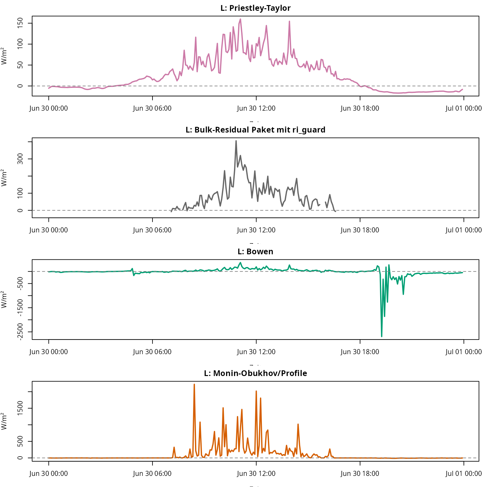
par(op)
op <- par(mfrow = c(5, 1), mar = c(3.2, 4, 2, 1))
plot(caldern$datetime, caldern$V_pt, type = "l", col = "#56B4E9", lwd = 2,
xlab = "Zeit", ylab = "W/m²", main = "V: Priestley-Taylor")
abline(h = 0, lty = 2, col = "grey50")
plot(caldern$datetime, caldern$V_bulk_pkg, type = "l", col = "#666666", lwd = 2,
xlab = "Zeit", ylab = "W/m²", main = "V: Bulk-Residual Paket mit ri_guard")
abline(h = 0, lty = 2, col = "grey50")
plot(caldern$datetime, caldern$V_bowen, type = "l", col = "#009E73", lwd = 2,
xlab = "Zeit", ylab = "W/m²", main = "V: Bowen")
abline(h = 0, lty = 2, col = "grey50")
plot(caldern$datetime, caldern$V_monin, type = "l", col = "#D55E00", lwd = 2,
xlab = "Zeit", ylab = "W/m²", main = "V: Monin-Obukhov/Profile")
abline(h = 0, lty = 2, col = "grey50")
plot(caldern$datetime, caldern$V_penman, type = "l", col = "#0072B2", lwd = 2,
xlab = "Zeit", ylab = "W/m²", main = "V: Penman")
abline(h = 0, lty = 2, col = "grey50")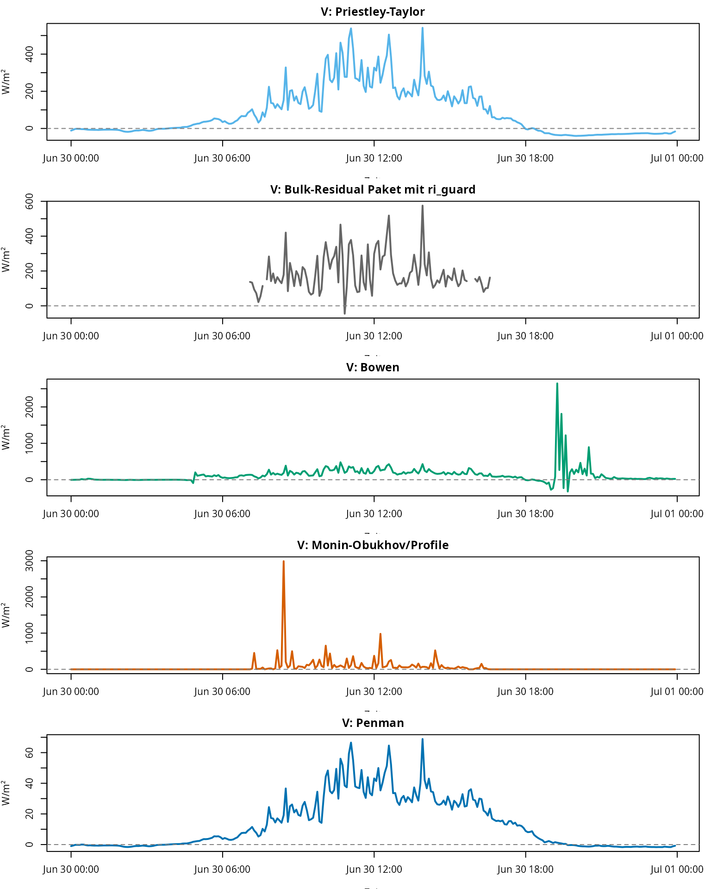
par(op)Interpretation. Die Einzelplots sind bewusst
getrennt. In einer gemeinsamen Grafik würden die empfindlichen Methoden
die Achsen dominieren und ruhigere Verläufe unsichtbar machen. Hier
sieht man stattdessen pro Methode, wann Vorzeichenwechsel,
NA-Abschnitte oder starke Ausschläge auftreten. Besonders
wichtig ist der Bulk-Residual-Plot: Unterbrechungen sind dort nicht
automatisch Datenlücken, sondern häufig die direkte Folge des
Richardson-Guards. Bei Bowen und Monin-Obukhov/Profile sind starke
Ausschläge dagegen eher Hinweise auf empfindliche Gradienten- oder
Stabilitätsbedingungen.
Konsistenzprüfung der Wärmeflussmethoden
Die folgenden Ergebnisse sind nicht nur ein Methodenvergleich. Sie sind auch eine Konsistenzprüfung der Energiebilanz.
Die Theorie schreibt die bodennahe Energiebilanz als:
\[ 0 = Q^{*} - B - L - V \]
Für energiegebundene oder residuale Methoden gilt näherungsweise beziehungsweise konstruktiv:
\[ L + V \approx Q^{*} - B \]
Diese Beziehung prüft, ob die berechneten turbulenten Wärmeflüsse energetisch zur verfügbaren Energie passen. Für Monin-Obukhov/Profile ist sie keine Closure-Erwartung, sondern nur eine Plausibilitätsdiagnose.
if (!("Q_star" %in% names(caldern))) {
if ("Q_star_measured" %in% names(caldern)) {
caldern$Q_star <- caldern$Q_star_measured
} else {
caldern$Q_star <- caldern$rad_net
}
}
if (!("B" %in% names(caldern))) {
caldern$B <- caldern$heatflux_soil
}
caldern$available_energy <- caldern$Q_star - caldern$B
caldern$LV_bulk_pkg <- caldern$L_bulk_pkg + caldern$V_bulk_pkg
caldern$LV_pt <- caldern$L_pt + caldern$V_pt
caldern$LV_bowen <- caldern$L_bowen + caldern$V_bowen
caldern$LV_monin <- caldern$L_monin + caldern$V_monin
caldern$diff_bulk_pkg <- caldern$LV_bulk_pkg - caldern$available_energy
caldern$diff_pt <- caldern$LV_pt - caldern$available_energy
caldern$diff_bowen <- caldern$LV_bowen - caldern$available_energy
caldern$diff_monin <- caldern$LV_monin - caldern$available_energy
energy_row <- function(method, lv, ref) {
valid <- is.finite(lv) & is.finite(ref)
diff <- lv[valid] - ref[valid]
data.frame(
Methode = method,
Mittel_L_plus_V = mean(lv[valid], na.rm = TRUE),
Mittel_Q_star_minus_B = mean(ref[valid], na.rm = TRUE),
Mittlere_Abweichung = mean(diff, na.rm = TRUE),
Max_abs_Abweichung = max(abs(diff), na.rm = TRUE),
Gueltige_Zeitpunkte = sum(valid)
)
}
energy_consistency <- rbind(
energy_row(
"Bulk-Residual Paket (ri_guard)",
caldern$LV_bulk_pkg,
caldern$available_energy
),
energy_row(
"Priestley-Taylor",
caldern$LV_pt,
caldern$available_energy
),
energy_row(
"Bowen",
caldern$LV_bowen,
caldern$available_energy
),
energy_row(
"Monin-Obukhov/Profile",
caldern$LV_monin,
caldern$available_energy
)
)
energy_consistency[, 2:5] <- round(energy_consistency[, 2:5], 1)
energy_consistency
#> Methode Mittel_L_plus_V Mittel_Q_star_minus_B
#> 1 Bulk-Residual Paket (ri_guard) 279.6 279.6
#> 2 Priestley-Taylor 108.7 108.7
#> 3 Bowen 108.7 108.7
#> 4 Monin-Obukhov/Profile 156.9 108.7
#> Mittlere_Abweichung Max_abs_Abweichung Gueltige_Zeitpunkte
#> 1 0.0 0.0 113
#> 2 0.0 0.0 288
#> 3 0.0 0.0 288
#> 4 48.2 5004.3 288Interpretation. Diese Tabelle ist die zentrale
Konsistenzprüfung. Wichtig ist, dass der Mittelwert von
Q_star - B jetzt methodenspezifisch über dieselben gültigen
Zeitschritte berechnet wird wie L + V. Dadurch ist der
Bulk-Residual-Pfad fair lesbar: Er hat nur 113 gültige Zeitpunkte, weil
der Guard sehr stabile oder ungültige Situationen entfernt. Für genau
diese gültigen Zeitpunkte schließt der residuale Pfad jedoch
erwartungsgemäß: mittlere und maximale Abweichung liegen bei 0
beziehungsweise 0 W/m².
Priestley-Taylor und Bowen schließen ebenfalls, weil beide Pfade die verfügbare Energie explizit aufteilen. Das bedeutet aber Unterschiedliches: Bei PT ist die Partitionierung relativ robust parametrisiert; bei Bowen kann sie trotz perfektem Energieabschluss durch kleine Feuchtegradienten oder Nennerprobleme einzelne extreme Anteile erzeugen. Monin-Obukhov/Profile ist dagegen kein Closure-Verfahren. Die mittlere Abweichung von 48.2 W/m² und die maximale Abweichung von 5004.3 W/m² sind deshalb keine Rundungsfehler, sondern ein Hinweis: Dieser Profilpfad liefert in einzelnen 5-Minuten-Situationen Werte, die energetisch nicht wie eine Bilanzpartition gelesen werden dürfen.
Diagnose auffälliger Werte und Stabilitätsfälle
Die Extremwertdiagnose soll nicht alle auffälligen Zeitschritte ausgeben. Sie fasst zuerst zusammen, wo Extremwerte auftreten, und zeigt danach nur die stärksten Fälle. Zusätzlich wird der Richardson-Guard des Bulk-Paketpfads ausgewiesen.
threshold_flux <- 600
caldern$dT_2_10 <- caldern$Ta_2m - caldern$Ta_10m
caldern$dH_2_10 <- caldern$Huma_2m - caldern$Huma_10m
caldern$dU_2_10 <- caldern$Windspeed_2m - caldern$Windspeed_10m
extreme_all <- rbind(
data.frame(
datetime = caldern$datetime,
Methode = "Bulk-Residual Paket (ri_guard)",
Fluss = "L",
Wert = caldern$L_bulk_pkg,
dT_2_10 = caldern$dT_2_10,
dH_2_10 = caldern$dH_2_10,
dU_2_10 = caldern$dU_2_10,
Q_star_minus_B = caldern$available_energy,
bulk_stability = caldern$bulk_stability
),
data.frame(
datetime = caldern$datetime,
Methode = "Bowen",
Fluss = "L",
Wert = caldern$L_bowen,
dT_2_10 = caldern$dT_2_10,
dH_2_10 = caldern$dH_2_10,
dU_2_10 = caldern$dU_2_10,
Q_star_minus_B = caldern$available_energy,
bulk_stability = NA_character_
),
data.frame(
datetime = caldern$datetime,
Methode = "Bowen",
Fluss = "V",
Wert = caldern$V_bowen,
dT_2_10 = caldern$dT_2_10,
dH_2_10 = caldern$dH_2_10,
dU_2_10 = caldern$dU_2_10,
Q_star_minus_B = caldern$available_energy,
bulk_stability = NA_character_
),
data.frame(
datetime = caldern$datetime,
Methode = "Monin-Obukhov/Profile",
Fluss = "L",
Wert = caldern$L_monin,
dT_2_10 = caldern$dT_2_10,
dH_2_10 = caldern$dH_2_10,
dU_2_10 = caldern$dU_2_10,
Q_star_minus_B = caldern$available_energy,
bulk_stability = NA_character_
),
data.frame(
datetime = caldern$datetime,
Methode = "Monin-Obukhov/Profile",
Fluss = "V",
Wert = caldern$V_monin,
dT_2_10 = caldern$dT_2_10,
dH_2_10 = caldern$dH_2_10,
dU_2_10 = caldern$dU_2_10,
Q_star_minus_B = caldern$available_energy,
bulk_stability = NA_character_
)
)
extreme_cases <- extreme_all[abs(extreme_all$Wert) > threshold_flux, ]
extreme_count <- as.data.frame(
table(extreme_cases$Methode, extreme_cases$Fluss),
stringsAsFactors = FALSE
)
names(extreme_count) <- c("Methode", "Fluss", "Anzahl")
extreme_count <- extreme_count[extreme_count$Anzahl > 0, ]
bulk_guard_summary <- as.data.frame(
table(caldern$bulk_stability, useNA = "ifany"),
stringsAsFactors = FALSE
)
names(bulk_guard_summary) <- c("bulk_stability", "Anzahl")
extreme_count
#> Methode Fluss Anzahl
#> 1 Bowen L 4
#> 2 Monin-Obukhov/Profile L 15
#> 3 Bowen V 4
#> 4 Monin-Obukhov/Profile V 3
bulk_guard_summary
#> bulk_stability Anzahl
#> 1 neutral 1
#> 2 stable 5
#> 3 unstable 107
#> 4 very_stable 175
if (nrow(extreme_cases) > 0) {
extreme_cases$abs_Wert <- abs(extreme_cases$Wert)
extreme_cases <- extreme_cases[order(-extreme_cases$abs_Wert), ]
extreme_top <- head(extreme_cases, 10)
extreme_top$Wert <- round(extreme_top$Wert, 1)
extreme_top$abs_Wert <- round(extreme_top$abs_Wert, 1)
extreme_top$dT_2_10 <- round(extreme_top$dT_2_10, 3)
extreme_top$dH_2_10 <- round(extreme_top$dH_2_10, 3)
extreme_top$dU_2_10 <- round(extreme_top$dU_2_10, 3)
extreme_top$Q_star_minus_B <- round(extreme_top$Q_star_minus_B, 1)
extreme_top
} else {
data.frame(Hinweis = "Keine Werte oberhalb der Diagnosegrenze gefunden.")
}
#> datetime Methode Fluss Wert dT_2_10 dH_2_10
#> 1254 2017-06-30 08:25:00 Monin-Obukhov/Profile V 2988.5 0.08 3.28
#> 520 2017-06-30 19:15:00 Bowen L -2695.0 -0.84 7.67
#> 808 2017-06-30 19:15:00 Bowen V 2646.2 -0.84 7.67
#> 966 2017-06-30 08:25:00 Monin-Obukhov/Profile L 2223.5 0.08 3.28
#> 1009 2017-06-30 12:00:00 Monin-Obukhov/Profile L 2018.8 0.30 0.52
#> 522 2017-06-30 19:25:00 Bowen L -1861.2 -0.90 8.35
#> 810 2017-06-30 19:25:00 Bowen V 1810.2 -0.90 8.35
#> 1012 2017-06-30 12:15:00 Monin-Obukhov/Profile L 1806.9 0.21 2.47
#> 986 2017-06-30 10:05:00 Monin-Obukhov/Profile L 1512.6 0.29 2.66
#> 999 2017-06-30 11:10:00 Monin-Obukhov/Profile L 1464.3 0.42 1.38
#> dU_2_10 Q_star_minus_B bulk_stability abs_Wert
#> 1254 0.003 207.7 <NA> 2988.5
#> 520 -0.137 -48.8 <NA> 2695.0
#> 808 -0.137 -48.8 <NA> 2646.2
#> 966 0.003 207.7 <NA> 2223.5
#> 1009 -0.028 428.4 <NA> 2018.8
#> 522 0.062 -50.9 <NA> 1861.2
#> 810 0.062 -50.9 <NA> 1810.2
#> 1012 -0.022 318.2 <NA> 1806.9
#> 986 0.037 498.7 <NA> 1512.6
#> 999 -0.094 554.5 <NA> 1464.3Interpretation. Die Extremwertzählung zeigt, wo die
problematischen 5-Minuten-Werte entstehen. Bowen erzeugt in diesem Lauf
8 auffällige Werte oberhalb der Diagnosegrenze, Monin-Obukhov/Profile
18. Der Bulk-Residual-Paketpfad erscheint hier nicht als
Extremwertlieferant, weil der Richardson-Guard kritische Profilzustände
nicht als große Flüsse weiterrechnet, sondern als NA
ausweist.
Die Stabilitätszählung ist dafür entscheidend: Von 288 Zeitschritten
werden 107 als instabil, 1 als neutral, 5 als stabil und 175 als sehr
stabil klassifiziert. Nur die nicht geguardeten Fälle gehen in
L_bulk_pkg und V_bulk_pkg ein. Bei Bowen und
Monin-Obukhov/Profile ist die Lage anders: Dort können große finite
Werte sichtbar bleiben. Die Top-Fälle zeigen genau solche Situationen,
häufig bei kleinen Temperatur- oder Winddifferenzen. Für die
Interpretation heißt das: Ein Extremwert ist hier zuerst ein
Diagnosehinweis auf Daten- und Methodenempfindlichkeit, nicht
automatisch ein reales Wärmeflussereignis.
Energetische Konsistenz: energiegebundene Methoden
cols_closure <- c(
"#666666",
"#CC79A7",
"#009E73"
)
closure_values <- c(
caldern$diff_bulk_pkg,
caldern$diff_pt,
caldern$diff_bowen
)
ylim_closure <- range(closure_values, na.rm = TRUE)
op <- par(mar = c(6, 4, 3, 1))
plot(
caldern$datetime,
caldern$diff_bulk_pkg,
type = "l",
col = cols_closure[1],
lwd = 2,
ylim = ylim_closure,
xlab = "Zeit",
ylab = "(L + V) - (Q* - B) [W/m²]",
main = "Energetische Konsistenz: bilanzgebundene Pfade"
)
lines(caldern$datetime, caldern$diff_pt, col = cols_closure[2], lwd = 2)
lines(caldern$datetime, caldern$diff_bowen, col = cols_closure[3], lwd = 2)
abline(h = 0, lty = 2, col = "grey40")
par(xpd = NA)
legend(
"bottom",
inset = c(0, -0.35),
horiz = TRUE,
bty = "n",
legend = c(
"Bulk Paket ri_guard",
"Priestley-Taylor",
"Bowen"
),
col = cols_closure,
lty = 1,
lwd = 2
)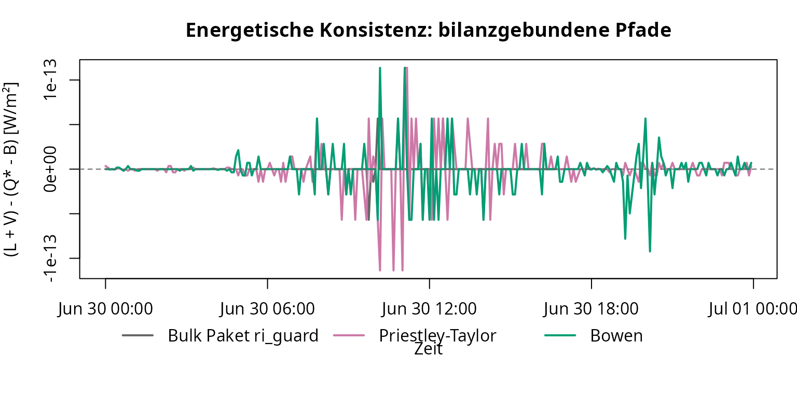
par(op)Interpretation. Diese Grafik trennt bewusst die
energiegebundenen beziehungsweise residualen Pfade von
Monin-Obukhov/Profile. Bei Bulk-Residual, PT und Bowen bedeutet Nähe zur
Nulllinie: Die Summe aus L und V passt zur
verwendeten verfügbaren Energie. Bei PT ist das konstruktiv, bei
Bulk-Residual für gültige Zeitschritte ebenfalls, weil V
als Rest berechnet wird. Bowen kann ebenfalls exakt schließen, solange
der Nenner nicht geguardet oder nicht endlich ist.
Diese Nulllinie beweist aber nicht, dass jede einzelne
Partitionierung physikalisch gut ist. Sie sagt nur: Die
Energiebuchhaltung ist konsistent. Ob die Aufteilung in L
und V plausibel ist, muss zusätzlich über Gradienten,
Extremwerte und Warnungen gelesen werden.
Monin-Obukhov/Profile: Wärmeflüsse aus Höhenunterschieden
mo_diff <- caldern$diff_monin
mo_finite <- is.finite(mo_diff)
mo_ylim <- quantile(mo_diff[mo_finite], probs = c(0.05, 0.95), na.rm = TRUE)
mo_lower <- mo_finite & mo_diff < mo_ylim[1]
mo_upper <- mo_finite & mo_diff > mo_ylim[2]
mo_inside <- mo_finite & !mo_lower & !mo_upper
op <- par(mar = c(6, 4, 3, 1))
plot(
caldern$datetime[mo_inside],
mo_diff[mo_inside],
type = "l",
col = "#D55E00",
lwd = 2,
ylim = mo_ylim,
xlab = "Zeit",
ylab = "(L_MO + V_MO) - (Q* - B) [W/m²]",
main = "Monin-Obukhov/Profile: Plausibilitätsprüfung gegen Q* - B"
)
abline(h = 0, lty = 2, col = "grey40")
points(caldern$datetime[mo_lower], rep(mo_ylim[1], sum(mo_lower)),
pch = 25, col = "#D55E00", bg = "#D55E00")
points(caldern$datetime[mo_upper], rep(mo_ylim[2], sum(mo_upper)),
pch = 24, col = "#D55E00", bg = "#D55E00")
mtext(
paste0(
"Randmarker: ",
sum(mo_lower), " unten, ", sum(mo_upper), " oben"
),
side = 3,
line = 0.2,
cex = 0.8,
col = "grey30"
)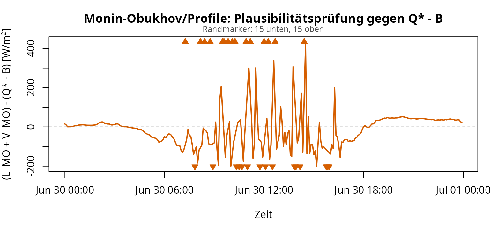
par(op)Interpretation. Diese Grafik muss anders gelesen werden als die vorige. Monin-Obukhov/Profile berechnet \(L\) und \(V\) aus den gemessenen Unterschieden zwischen zwei Höhen: Temperatur, Feuchte, Wind und Messhöhe bestimmen das Ergebnis. Die Werte werden nicht nachträglich so angepasst, dass ihre Summe genau der verfügbaren Energie \(Q^* - B\) entspricht.
Die Paketfunktionen fangen inzwischen problematische Sonderfälle ab:
Nullgradienten führen für den jeweiligen Fluss zu 0, ungültige Höhen
oder Windwerte sowie nicht auswertbare Profilzustände führen zu
NA mit Warnung. Große, aber rechnerisch gültige Werte
bleiben jedoch sichtbar. Deshalb zeigt die Grafik nicht einfach einen
Fehler, sondern prüft, ob die profilbasierten Werte energetisch zur
verfügbaren Energie passen.
Wenn die Abweichung groß ist, sollte der entsprechende Zeitschritt nicht als belastbarer Wärmefluss interpretiert werden. Wahrscheinlicher ist dann, dass kleine Temperatur- oder Feuchtegradienten, schwache Windunterschiede oder Stabilitätsannahmen den Profilansatz stark beeinflussen.
Die Randmarker sind hier wichtig. Sie bedeuten: Einige Werte liegen
außerhalb der robust dargestellten Achse. Die Grafik zeigt also nicht
„kleine Abweichungen“, sondern eine lesbare Mitte der Verteilung plus
Hinweise auf Ausreißer. Das lässt sich so übersetzen: Der Profilpfad
sagt nicht „so viel Energie wurde bilanziert“, sondern „so
reagiert eine profil- und stabilitätsabhängige Methode auf diese
Messprofile“. Wenn diese Reaktion stark von Q_star - B
abweicht, ist das eine Diagnose über Gradienten, Windschere und
Stabilitätsannahmen.
Konsequenz für den Methodenvergleich
Die Methoden reagieren auf denselben Stationsdatensatz unterschiedlich, weil sie nicht dieselbe Frage beantworten. Für diesen Caldern-Tag ergibt sich daraus eine klare Lesart:
- Priestley-Taylor ist der stabile Einstiegspfad. Er beantwortet: Wie
lässt sich die verfügbare Energie ohne empfindliche Profilquotienten in
LundVaufteilen? - Bulk-Residual mit
ri_guardbeantwortet: Welche Zeitschritte erlauben eine einfache wind- und temperaturgradientenbasierte Schätzung vonL, und wo sagt die Stabilitätsdiagnose, dass der neutrale Bulk-Ansatz nicht belastbar ist? - Bowen beantwortet: Wie würde ein Temperatur-/Feuchtegradient die verfügbare Energie partitionieren? Die Methode kann energetisch schließen und trotzdem einzelne extreme Anteile erzeugen.
- Penman beantwortet nur die Frage nach
V. Es ist kein vollständigesL/V-Paar und darf deshalb nicht wie PT, Bulk oder Bowen bilanziell verglichen werden. - Monin-Obukhov/Profile beantwortet eine Profilfrage: Was ergeben
Temperatur-, Feuchte- und Windunterschiede zwischen zwei Höhen, wenn sie
als turbulenter Austausch interpretiert werden? Große Ausschläge,
NA-Werte oder Abweichungen von \(Q^* - B\) sind deshalb keine bloßen Störungen. Sie zeigen, dass Gradienten, Windschere oder Stabilitätsannahmen für diese Zeitschritte kritisch sind.
Die wichtigste praktische Konsequenz lautet: Der Methodenvergleich
ist keine Suche nach der einen „besten“ Kurve. Er zeigt, welche Annahmen
bei denselben Stationsdaten stabil sind und welche Annahmen zu
Diagnosefällen führen. Für eine robuste Auswertung sollte PT als
Baseline gelesen werden, Bulk-Residual mit Guard als transparenter
residualer Vergleich, Bowen als gradientenempfindliche Partitionierung,
Penman als separater V-Vergleich und Monin-Obukhov/Profile
als Diagnosepfad.